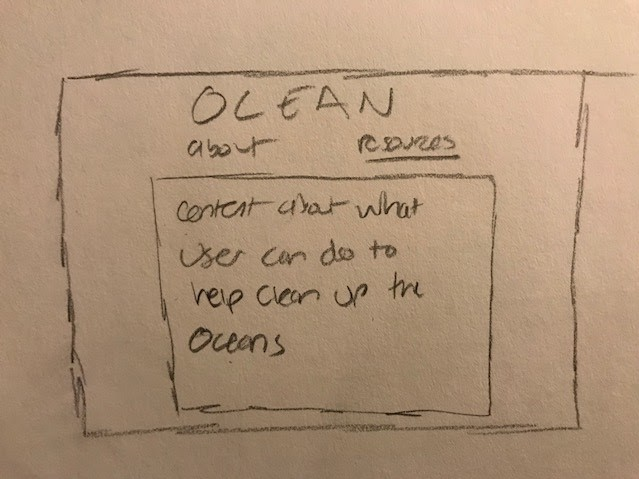
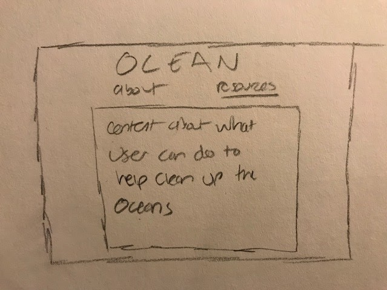

The goal of this project was to create an engaging and educational website to teach about the effects of various types of ocean pollution on marine life. Our intended audience is focused primarily on a younger age group, but can be used by anyone, as the graphics and content are simple enough for everyone to enjoy and understand.
Sketches / Wireframes:
 

The design choices we made were based on the intention of the program being fun and friendly to the user. The bold color, simple graphics, and sans-serif font all add to the theme of being an underwater scene that's energetic and welcoming. Since our goal was to educate others about ocean pollution, we wanted this education to be accessible to all ages. Thus, keeping the design simple and vibrant, we are able to do so.
Sources:
Particle.js is a JavaScript library created by Vincent Garreau as a way to create particles. This was used to make the bubbles flowing in the background of the pages. It was modified to only include the code for the bubbles, and changed to create the size, amount, color, opacity, and direction that they flow in.
Hexi.js is the second JavaScript library used in this program to create the main graphic. The library was created by kittykatattack on GitHub in order to create HTML5 games.
Ella worked mostly on the HTML and CSS for the web pages, along with integrating the bubbles in the background using particle.js. Jin Jin worked mostly on the interactive program using Hexi.js. Along with this, Ella added the content for this about page, and Jin Jin added content to the resources page. Together we worked on adding the content to the interactive graphic, as well as integrating the graphic onto the webpage.
One thing we learned about while creating this site was how to integrate JavaScript into HTML and CSS files from an externally linked page. It proved to be difficult to combine our two parts together and required a lot of research on how JavaScript canvases work on HTML pages. This was especially difficult because Hexi.js is not a well-known library, so there were no tutorials or instructions on how to integrate and position something made using Hexi.js on an HTML page. Along with this, we had a problem with the interactivity of the program not working when we put it on the page. Once we realized that the interactivity was behind the particle.js canvas, we were able to position: absolute it to be on top.